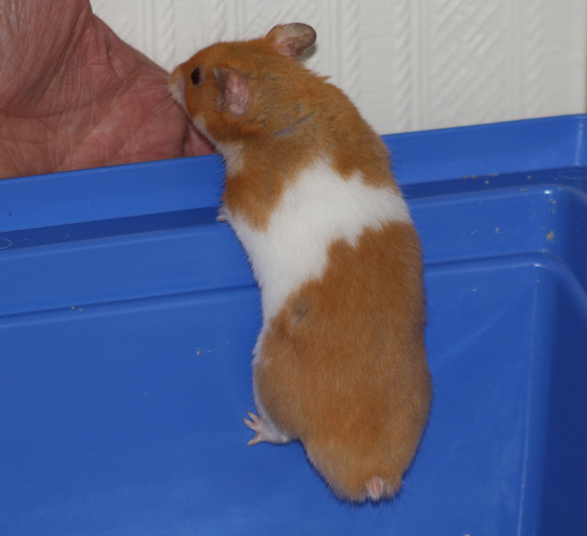

17-May-2017 | Milku
So your hamsters have some tasty treats.
The 17th May is my new favourite day. It's National Baking Day. And my humans haven't disappointed me. They have been baking and I can share some tasty new hamster treat recipes with you.
Once again, the details are a bit sketchy. I told my humans that you might want to hear about specific quantities of ingredients, but they just don't listen to me. You'll have to forgive me, but I didn't spend too much time trying to discuss the recipes with them. I'm the chief taster so I'm really only bothered about the finished product and its flavour. How it was achieved is of little interest. After all, I'm not going to get a chance to do any baking myself.
So here we have Recipe 1. Actually, it's the fifth treat recipe they've created, but we'll start the count again for this post. You can look in my archives to get April's cooking post 1, cooking post 2 and cooking post 3.
Thene there's Recipe 2.
Finally, here's Recipe 3.
Apparently, they put all the ingredients in a food processor and mix until they have a mixture they can mould into little pellets.
The treats don't look too attractive. They've still got to work on their presentation skills, but after about 10 to 15 minutes in the oven at about gas mark 4, they taste great.
The ingredients suggested are just ones that I enjoy. Really you can get your humans to blend the stuff you like eating. They just have to make sure that they form cheek pouch sized treats.